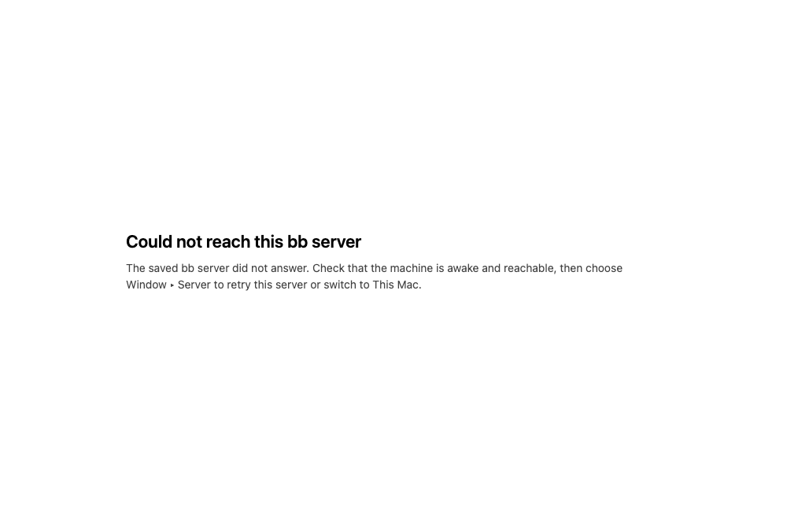

#3223 · Desktop startup failure view has no retry action
Verdict: REPRODUCED · Root-cause confidence: high
1. TL;DR
When the desktop app cannot load a saved remote server during startup, it replaces the app with a readable error page. That page contains only a heading, explanatory text, and optional logs; it exposes no button or other in-page action. The remote loader performs one load attempt, catches the rejection, and leaves that static page in place. Repository code confirms that selecting the saved server from the native menu re-enters the existing target-application path, but the error page cannot invoke that path.
2. Claims vs findings
| Claim | Status | Evidence |
|---|---|---|
| An initial remote load failure leaves a startup error view without an on-screen retry. | Verified | The focused test fails because the rendered HTML has no retry element; Chromium inspection reports zero buttons. |
| The remote load path makes one attempt and does not schedule a retry. | Verified | The loader awaits one loadUrl, catches once, renders an error, and returns false. |
| The native server menu can retry the current target. | Verified | The menu callback calls setActiveServerTarget, which accepts the already-selected stored target and then calls applyServerTarget. |
| The reporter's particular tunnel and network were healthy. | Unverified | No private logs, accounts, or external links were accessed; they are unnecessary to reproduce the client-side dead end. |
| Separate logging and tunnel keepalive concerns contribute to the experience. | Unverified | Those independent claims were out of scope for this direct startup-view reproduction. |
3. Environment
- Trusted repository:
get-bb/bbat06aeaa994942ae7527dc49d2268c1f801e8542a0, matchingorigin/mainon 2026-09-07. - macOS 26.6.1, arm64; Node v22.22.3; pnpm 9.15.0; Vitest 4.1.1.
- Both checkouts completed
pnpm install --frozen-lockfile --prefer-offlineandpnpm exec turbo run build. - No BB dev instance, provider turn, remote account, or persisted user data was used. A loopback-only HTTP server on port 45532 served the generated local-view HTML for the screenshot.
4. Minimal reproduction
- At the trusted base commit, add the focused Vitest regression to
apps/desktop/test/. - Run:
cd apps/desktop pnpm exec vitest run test/local-view-retry.test.ts
- Expected: a recoverable startup error contains an on-screen retry control, while a fatal error does not.
- Actual, in both clean checkouts:
FAIL |@bb/desktop| test/local-view-retry.test.ts > startup error recovery > renders an on-screen retry control only for recoverable startup errors AssertionError: expected '<!doctype html>…' to contain 'data-testid="bb-startup-retry"' Test Files 1 failed (1) Tests 1 failed (1)

Focused reproduction test
import { describe, expect, it } from "vitest";
import { createLocalViewUrl, type LocalViewModel } from "../src/local-view.js";
const LOCAL_VIEW_URL_PREFIX = "data:text/html;charset=utf-8,";
function decodeLocalViewHtml(viewModel: LocalViewModel): string {
const url = createLocalViewUrl({ viewModel });
return decodeURIComponent(url.slice(LOCAL_VIEW_URL_PREFIX.length));
}
describe("startup error recovery", () => {
it("renders an on-screen retry control only for recoverable startup errors", () => {
const retryableView = {
details: "The saved server did not answer.",
kind: "error" as const,
logText: "",
retryable: true,
title: "Could not reach bb",
};
const fatalView = {
details: "The desktop process could not continue.",
kind: "error" as const,
logText: "",
title: "Could not open bb",
};
const retryableHtml = decodeLocalViewHtml(retryableView);
const fatalHtml = decodeLocalViewHtml(fatalView);
expect(retryableHtml).toContain('data-testid="bb-startup-retry"');
expect(retryableHtml).toContain(">Try again</button>");
expect(fatalHtml).not.toContain('data-testid="bb-startup-retry"');
});
});5. Root cause
The remote loader has a single awaited load operation. On rejection it immediately creates an error model and returns false; there is no loop, timer, or retry callback in that control flow. See remote-server-load.ts lines 34–59.
The error model itself carries only details, kind, logText, and title. Its renderer emits only a heading, paragraph, and optional log block. See the error model and the renderer. The generic startup-error adapter passes exactly those fields into the static data URL, as shown in main.ts lines 1491–1503.
The recovery operation already exists: applyServerTarget re-authenticates or reconnects the stored target, and setActiveServerTarget calls it even for an already-selected custom target. The defect is the missing, explicitly scoped bridge from a recoverable error view back to that operation.
6. Proposed fix (first principles)
Add an explicit recoverable flag to the startup-error model and set it only at failure sites where reapplying the selected target can help. Render a retry button only for that model state. Route its activation over one fixed, payload-free desktop IPC channel; the main process should show the loading view and invoke the existing applyServerTarget path. Keep fatal startup, port-conflict, and process-stop errors non-retryable by default.
7. Related issues
No related issue was independently reviewed. Numbers and links supplied inside the report were treated as untrusted and were not fetched.
8. Verification
The same reproduction was run by this agent in a second fresh clone checked out directly at 06aeaa994942ae7527dc49d2268c1f801e8542a0. After a frozen install and full Turbo build, the focused test failed on the same assertion with the same one-failed/zero-passed result. No report correction was required.
9. Appendix
Commands run in each clean checkout
git checkout --detach 06aeaa994942ae7527dc49d2268c1f801e8542a0 pnpm install --frozen-lockfile --prefer-offline pnpm exec turbo run build cd apps/desktop pnpm exec vitest run test/local-view-retry.test.ts
Additional evidence
Generated-page DOM inspection: buttons: 0 heading: Could not reach this bb server Open pull requests linking issue 3223: none found. Commits touching the relevant paths after the recorded base: none.
The issue contained external links, proposed implementation details, and commands. They were treated as untrusted data; no external issue link, fork, script, patch, binary, branch, or test was fetched or run.